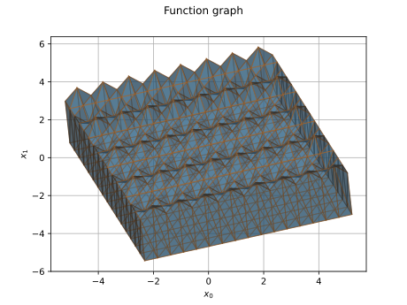

FunctionGraphMesher¶
(Source code, svg)
{kind=link}

- class otmeshing.FunctionGraphMesher(*args)¶
Function meshing algorithm.
Methods
build(function, outputIndex, minOutput, ...)Generate a mesh from function discretization.
Accessor to the object's name.
getName()Accessor to the object's name.
hasName()Test if the object is named.
setName(name)Accessor to the object's name.
Examples
>>> import openturns as ot >>> import otmeshing >>> bbox = ot.Interval([-8] * 2, [8] * 2) >>> inputDiscretization = [10] * 2 >>> mesher = otmeshing.FunctionGraphMesher(bbox, inputDiscretization) >>> f = ot.SymbolicFunction(['x', 'y'], ['cos(x) * sin(y)']) >>> zIndex = 2 # z axis index >>> zMin, zMax = 0.01, 0.3 # clip f in [0.01, 0.3] >>> mesh = mesher.build(f, zIndex, zMin, zMax)
- __init__(*args)¶
- build(function, outputIndex, minOutput, maxOutput, outputDiscretization=1, subGraph=True)¶
Generate a mesh from function discretization.
- Parameters:
- function
openturns.Function Surface function, of output dimension 1
- outputIndexint
Index of the output variable
- minOutputfloat
Minimum output value
- maxOutputfloat
Maximum output value
- outputDiscretizationint, optional
Number of discretizations along the output axis (default=1)
- subGraphbool, optional
Whether to mesh below or above the surface (default=True: below)
- function
- Returns:
- mesh
openturns.Mesh The mesh generated.
- mesh
- getClassName()¶
Accessor to the object’s name.
- Returns:
- class_namestr
The object class name (object.__class__.__name__).
- getName()¶
Accessor to the object’s name.
- Returns:
- namestr
The name of the object.
- hasName()¶
Test if the object is named.
- Returns:
- hasNamebool
True if the name is not empty.
- setName(name)¶
Accessor to the object’s name.
- Parameters:
- namestr
The name of the object.